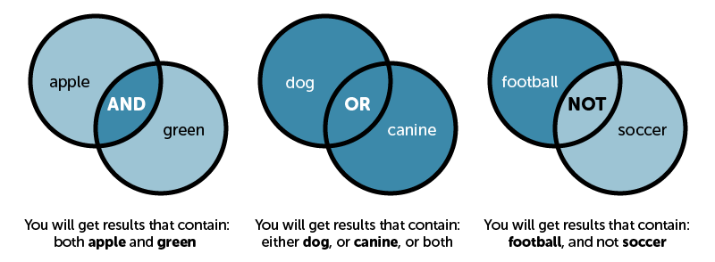
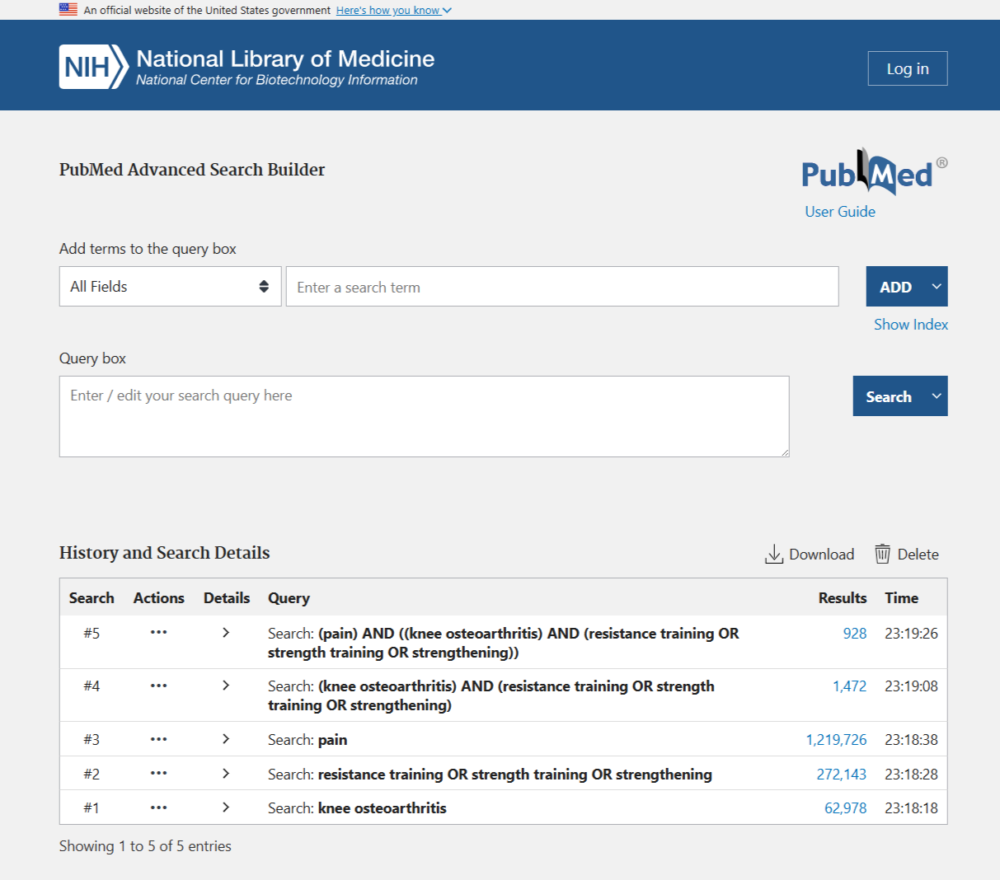

Workshop 3 - Study Design, Bias & Finding the Evidence
Research Methods and Statistics - T2 2026
Introduction
Welcome back! The last two workshops were about using Jamovi and running your first analyses. This week we step back from Jamovi and think like a researcher and a reader: how studies are designed, how bias sneaks in, and how you find and judge the evidence behind a claim. Hopefully some of the skills in this class will help you with other courses and assignments that require literature searching and interpreting studies to back up your writing.
This maps directly onto Lecture 5 (Bias, Blind Spots and Better Evidence) and Lecture 6 (Quantitative Research Design). Today you apply some of those learning objectives to real papers and to abstracts written to make specific problems visible.
The literature-searching part is a transferable skill for every course in your degree. At some point we all need to find evidence, judge how trustworthy it is, and read it efficiently.
You can come back to this page any time you need a reminder.
What you’ll do today
- Refresh the study-design map, the bias reference, and the evidence pyramid (the Essentials tabs)
- Turn a question into PICO, then into a Boolean search string (Part A, 5-10 min)
- Take that string into PubMed: build it, run it, read the search history to see where it can be improved, filter it, and triage what comes back (Part B, 15-20 min)
- Compare a real published study with a fabricated one in your discipline, and classify the design, rank the evidence, and spot any bias (Part C, 15-20 min)
- Write a one-line limitations statement in the style your exams reward
- Finish with the group Portfolio of Evidence activity (counts for marks; details at the end, 20 min)
Today has no dataset to download, but you will need a browser: Part B is a literature search in PubMed, so open https://pubmed.ncbi.nlm.nih.gov in a second tab/window when you get there (it’s free and needs no login). Everything else you need is on this page. Near the end there’s a “Save my responses as PDF” button so you can keep a filled-in copy of your work, including your search strings and results.
The essentials
Work through these tabs before the tasks. They condense Lectures 5–6 into what you need in front of you today, and they double as a reference you can scroll back to.
Every study you’ll read fits somewhere on this map (straight from Lecture 6).
| Family | Design | One-line cue |
|---|---|---|
| Experimental | Randomised controlled trial (RCT) | Researcher assigns groups at random (e.g. drug vs placebo) |
| Experimental | Non-randomised controlled trial | Groups compared, but allocation not random (e.g. patient chooses) |
| Observational (analytical) | Prospective cohort | Follow a group forward in time; measure who develops the outcome (e.g. cancer) |
| Observational (analytical) | Retrospective cohort | Same idea, but the follow-up already happened (look back through medical records) |
| Observational (analytical) | Case-control | Start with cases (have outcome) vs controls (don’t), look back at their exposure |
| Observational (descriptive) | Cross-sectional | A snapshot at one time point (e.g. a survey/poll) |
| Observational (descriptive) | Case report / series | Detailed report of one or a few patients (e.g. a novel disease) |
The quickest tell is time and control. Did the researcher do something to the participants (assign a treatment)? If so, it’s experimental. If not it’s observational, then ask which way time runs: forward from exposure (cohort), backward from outcome (case-control), or a single snapshot (cross-sectional)?
Bias = systematic error that pushes your results away from the truth. It’s not random noise, and a bigger sample won’t fix it (garbage in = garbage out). The ones you met in Lecture 5 refreshed below:
| Bias | What it is | Where it shows up most |
|---|---|---|
| Sampling / selection | Sample not representative; groups chosen unevenly | Convenience samples, surveys, case-control (choosing controls) |
| Non-response | Selected people don’t reply (or only partly) | Surveys, cross-sectional |
| Response / self-report | Wrong answers; leading questions; social desirability | Questionnaires, self-reported behaviour |
| Recall | People misremember past exposure | Case-control, any “looking back” |
| Attrition | Drop-outs over time, and drop-outs aren’t random | Cohort, RCT with long follow-up |
| Confounding | A lurking variable explains the apparent link | All observational designs |
| Expectation / confirmation | Beliefs of participants/researchers shape results | Unblinded experiments |
| Publication | Positive results get published, null results don’t | Systematic reviews / meta-analyses |
| Survivorship | Only the “survivors” are in the sample (WWII bombers example) | Retrospective data, “successful” cases |
Not all evidence is equal. Remember though these are guidelines, not laws. A thoughtful, well-conducted cohort study can be more informative than a sloppy RCT for example.
Top = filtered/synthesised research & lower risk of bias • Bottom = unfiltered / higher risk of bias
Systematic review vs meta-analysis. A systematic review searches for every study on a question using a pre-registered protocol, appraises them, and describes what they collectively found. A meta-analysis goes one step further and statistically pools all the study results into a single effect estimate with a confidence interval. Not every systematic review can support a meta-analysis, because sometimes the studies are too different to pool sensibly. Pooling adds precision, which is why meta-analysis sits at the very top, it is an statistical analysis of all the studies looking at that research question.
All papers will be published in some form with an abstract. A overall summary of key aspects of the study that follows this structure:
| Section | What you should find |
|---|---|
| Background / Aim | The research question and justification for this work. |
| Methods | The design, the sample, how bias was handled. This is where you classify the study and may be able to spot its weaknesses. |
| Results | The key numbers and direction (bigger/smaller, associated or not). No real interpretation just the values. |
| Conclusion | The authors’ claim/interpretation, watch for causal language the it hasn’t earned (i.e. overstating claims/results). |
When it comes to the paper itselfs, read the Methods first, Conclusion last, and be suspicious of the Conclusion. The design/bias/transparency (or lack thereof) lives in the Methods. A good reader decides how much to trust the Conclusion based on the Methods. Too often the authors will overstate their findings as it will make the work seem more important and novel.
Part A: From a question to a search string
Before you can judge evidence, you have to find it. In Lecuture 5 I introduced the PICO framework. You can use this when developing your research question for a study and also as a tool to help frame a search if you are looking at understanding a topic better. PICO can turn a vague question into a clear one, and Boolean logic turns a clear question into something a literature database can return the best results most efficiently. There are a bunch of usual tips and tricks in the toolkit tabs, then do the four short tasks. We’re all using the same worked example so we can compare notes.
Worked example question: In adults with knee osteoarthritis, does a 12-week strengthening program compared with usual care reduce pain?
The search toolkit
PICO turns a vague question into something searchable (Lecture 6). Here’s a different question worked through, so you can do the same to yours in a moment:
In older adults living at home, does a supervised balance program compared with usual activity reduce falls?
| Letter | Meaning | In this question |
|---|---|---|
| P | Patient / Population / Problem | older adults living at home |
| I | Intervention / Exposure | supervised balance program |
| C | Comparison | usual activity |
| O | Outcome | falls |
From PICO to a search string, in three moves:
- Pick your concepts. Usually just P, I and O. Leave C out of the search string: papers rarely put “usual activity” in the title, and adding it throws away good studies.
- List synonyms for each concept. How would different authors write the same idea?
older adults,elderly,community-dwelling. Orbalance training,balance exercise,postural stability. - Join them up. Synonyms with OR inside brackets, concepts with AND between brackets.
| Concept | Synonyms (joined with OR) |
|---|---|
| P older adults | "older adults" OR elderly OR "community-dwelling" |
| I balance program | balance OR "balance training" OR "postural stability" |
| O falls | falls OR "accidental falls" OR "fall risk" |
Which assembles into:
("older adults" OR elderly) AND (balance OR "balance training") AND (falls OR "accidental falls")
Now do the same to the knee osteoarthritis question above, on paper or in your head, before you open Task A1. Which words are the P, the I and the O? What would a different author have called each one? The tasks below check what you came up with.
The three operators do all the work. This is the mental picture worth keeping:

| Operator | What it does | Effect on results | Use it for |
|---|---|---|---|
| AND | Both terms must appear | Fewer (narrows) | Joining different concepts |
| OR | Either term will do | More (widens) | Joining synonyms |
| NOT | Excludes a term | Fewer (narrows) | Cutting a specific nuisance topic |
Brackets are not optional. Databases read operators left to right, so osteoarthritis AND strength* OR resistance is read as “(osteoarthritis AND strength*) OR resistance”, and you’ll be handed thousands of papers on say antibiotic resistance. What you meant was osteoarthritis AND (strength* OR resistance). Group every OR list in its own brackets, every time.
Handle NOT with care. football NOT soccer also deletes papers that compare the two, or remove US/Aus based papers which might be exactly what you wanted. Often it is better adding a concept with AND over excluding one with NOT.
Four bits of syntax that will do most of the heavy lifting for you.
| Tool | Looks like | What it does |
|---|---|---|
| Truncation | strength* |
Matches all endings: strength, strengthen, strengthening, strengths |
| Phrase (quotes) | "working memory" |
Keeps the words together, instead of finding the two words anywhere |
| Brackets | (a OR b) AND c |
Controls the order the operators are applied in |
| Field tag | pain[tiab] |
Restricts the term to a field, here title/abstract. These differ between databases. |
PubMed specifics worth knowing:
AND,OR,NOTmust be in CAPITALS. Lower-caseandis treated as an ordinary word.- Truncation needs at least four characters before the
*, sopain*works butapp*is ignored. - Truncation and quote marks switch off PubMed’s automatic MeSH mapping (see the MeSH tab in Part B).
- Common field tags:
[tiab]title/abstract,[ti]title only,[mh]MeSH heading,[au]author. These a PubMed specific.
| Where | Best for | Watch out for |
|---|---|---|
| PubMed | Health & life sciences. Free, no login, MeSH vocabulary, filters by study design | Thinner on sport-performance and psychology titles |
| Google Scholar | Casting a wide net, finding free PDFs, helps with finding “cited by” chains (a shortcut to building a search strategy) | No controlled vocabulary (largely natural language searching), no design filters, indexes low-quality and predatory journals too |
| SPORTDiscus | Exercise science, coaching, sports medicine | Needs a Griffith login to access |
| Cochrane Library | Systematic reviews and meta-analyses of treatments (the top of the pyramid) | Reviews only, and not every question has one |
Remember although many papers are behind a paywall, you have student access through the online Griffith Library which should cover 99.9% of papers you might ever need.
ChatGPT, Gemini, Claude and friends invent citations that look perfect and do not exist. They also invent DOIs and URLs, misreport findings, and can’t tell a strong study from a weak one. They have no reliable access to much of the published literature, especially anything recent. While there are PubMed pluggins, and they are improving, it is risky to rely on them as a way to synthesis/search for literature.
They can be useful for brainstorming synonyms for an OR group, or for explaining a term you don’t know. They are not a source of references. Anything an LLM gives you must be found and read in a real database before it goes anywhere near your work, and if you check, you’ll quickly see why.
Task A1: Break it into PICO
Which part of the question is the Comparison (C)?
Worked answer locked. Answer correctly above to unlock it.
P = adults with knee osteoarthritis, I = 12-week strengthening program, C = usual care, O = pain. The comparison is the alternative the intervention is judged against. Without a clear C, you can’t say a treatment “worked”, worked compared to what?
Note that C is the one you usually leave out of the search string. Papers almost never say “usual care” in the title or abstract, so including it filters out the very studies you want.
Task A2: Choose the search string
Which is the best search string for a database like PubMed?
AND, synonyms with OR, and * to
catch word endings.Worked answer locked. Answer correctly above to unlock it.
(osteoarthritis) AND (strength* OR resistance) AND (pain).
Each PICO concept becomes a bracketed group; OR widens (catches synonyms), AND narrows (all concepts must appear), and strength* truncates to strength/strengthen/strengthening. Natural-language questions work in Google but waste a database’s precision.
Task A3: Which way does the dial turn?
You run exercise AND pain, then change it to
exercise OR pain. What happens to the number of results?
Worked answer locked. Answer correctly above to unlock it.
It rises sharply. AND returns only the overlap (papers containing both words); OR returns everything in either circle, including every paper that mentions pain and has nothing to do with exercise. That’s why OR belongs inside a concept (between synonyms) and AND belongs between concepts. Swap them by accident and your search stops being a search.
Task A4: Mind your brackets
You want papers on osteoarthritis that involve strengthening or resistance work. Which string actually does that?
Worked answer locked. Answer correctly above to unlock it.
osteoarthritis AND (strength* OR resistance).
Options 1 and 3 are read the same way, (osteoarthritis AND strength*) OR resistance, so PubMed happily adds every paper containing the word resistance: antibiotic resistance, insulin resistance, electrical resistance. Option 4 does the opposite of what you want, it throws strengthening papers away.
One more thing to notice: strength* is legal (four or more characters before the *), but truncating switches off PubMed’s automatic mapping to MeSH headings. For a careful search you’d add the MeSH heading back in yourself with OR.
Part B: Let’s do it in PubMed
Time to stop talking about searching and do it. Open PubMed in a second tab/window or use the links below as we go (it’s free and needs no login) and keep this page beside it. Everything you type below stays in your browser and ends up in your saved PDF at the end.
The tabs are your manual, dip into them as you go rather than reading all six now.
Inside PubMed
PubMed is the free front end to MEDLINE, the world’s biggest index of health and life-science literature. Type into the single search box and PubMed does something clever behind your back: automatic term mapping. It takes your words, matches them against its MeSH vocabulary, and quietly searches the official heading and your words as text.
So heart attack also finds papers indexed under Myocardial Infarction without you asking. Useful, and worth knowing about, because the moment you use * or " " that help switches off.
On a results page, orient yourself with:
- the results count (top left), your single most useful feedback signal
- Filters (left sidebar) to narrow by design, date, age, species
- Best match vs Most recent (sort, top right)
The single box is fine for a quick look. For a real search, use Advanced (the link under the search box). Two things there change everything:
The query box shows you PubMed’s actual interpretation of your search. Click the > arrow next to any search in your history to see how your words were translated. If your search returns something bizarre, this is where you find out why.
Search history numbers every search you run (#1, #2, #3…) with its result count, and lets you combine them:
- Search each concept separately first:
#1= your P terms,#2= your I terms,#3= your O terms - Then combine:
#1 AND #2 AND #3 - Too few results? Rerun just the weak concept with more
ORsynonyms and recombine
That workflow, one concept at a time, then combine, is how researchers actually build a search. It also shows you which concept is strangling your results.
MeSH (Medical Subject Headings) is a controlled vocabulary. Human indexers tag every MEDLINE paper with the official headings for what it’s about, so searching a MeSH heading finds relevant papers regardless of the words the authors chose.
Two quirks to expect:
- Headings are often inverted: it’s Diabetes Mellitus, Type 2, not “type 2 diabetes”. Anti-Inflammatory Agents, Non-Steroidal, not “NSAIDs”.
- MeSH tagging lags, so the newest papers (“ahead of print”) may not be indexed yet. A MeSH-only search quietly misses this month’s research.
How to use it: search your concept in the MeSH browser, find the official heading, then use it alongside your text words:
("Diabetes Mellitus, Type 2"[mh] OR "type 2 diabetes"[tiab])
That’s belt and braces: the indexer’s word and the authors’ words.
The left sidebar is where a 12,000-result search becomes readable.
| Filter | What it’s for |
|---|---|
| Article type | Jump straight up the evidence pyramid: Meta-Analysis, Systematic Review, Randomized Controlled Trial |
| Publication date | Currency. 5 or 10 years is a normal starting point |
| Free full text | Papers you can read right now |
| Species / Age | Humans only; specific age groups |
Two traps. Filters stay on until you clear them, and students routinely spend ten minutes wondering where all the papers went. And article-type filters depend on indexing, so a brand-new RCT may not carry the “Randomized Controlled Trial” tag yet.
You will never read everything you find. Triage in three passes:
- Titles. Reject fast. Most of a results list is genuinely irrelevant.
- Abstracts. For the survivors, read the Methods sentences first (design, sample), then Results.
- Full text. Only for the handful that pass both.
Then mine the good ones. Every PubMed record has Similar articles, Cited by and References; following those chains (“snowballing”) often beats another hour of keyword fiddling.
To keep your work: Save or Email a record, Send to → Citation manager for EndNote or Zotero, or set up a free My NCBI account to save searches and create alerts for new papers.
A quick-and-dirty scorecard for people new to appraisal. Score each criterion 1 (poor) / 2 (okay) / 3 (good).
| Criterion | 1 = poor | 3 = good |
|---|---|---|
| Relevance | Off topic, barely related | Directly answers your question |
| Recency | >10 years old | <5 years old |
| Credibility | Blog, unknown or predatory journal | Reputable peer-reviewed journal (check the journal name + “scimago”, aim for Q1) |
| Methods | Vague, not repeatable | Detailed, appropriate, repeatable |
| Sample | Tiny or unrepresentative (ex sci n<15, pharmacy n<30) | Large and representative (ex sci n>50, pharmacy n>100) |
Reading the total (out of 15): 12+ is a keeper; 9–11 is usable with caveats; below 9, find something better. It’s a rough guide, not a substitute for the design-and-bias thinking you’ll do in Part C.
Task B1: Pick a topic and find its MeSH heading
Pick the topic closest to your degree. You’ll search this question for the rest of Part B, and in Part C you’ll appraise two abstracts on the same topic.
Your question: In recreationally active adults, does high-intensity interval training (HIIT) improve VO₂max more than moderate-intensity continuous training?
| Concept | Starter synonyms for your OR group |
|---|---|
| P adults | adults OR "young adults" (often safe to drop entirely) |
| I HIIT | "high-intensity interval training" OR HIIT OR "sprint interval training" |
| O fitness | VO2max OR "aerobic capacity" OR "cardiorespiratory fitness" |
Look up HIIT in the MeSH browser. Which is the official MeSH heading?
Worked answer locked. Answer correctly above to unlock it.
High-Intensity Interval Training, a MeSH heading added in 2018 and filed under Physical Conditioning, Human. “HIIT” is an entry term, type it in and MeSH sends you to the real heading. That’s exactly the service controlled vocabulary provides, it collects every author’s phrasing under one label.
A robust version of the I concept: ("High-Intensity Interval Training"[mh] OR HIIT[tiab] OR "high intensity interval training"[tiab])
Your question: In adults with type 2 diabetes, does supervised exercise training reduce HbA1c compared with usual care?
| Concept | Starter synonyms for your OR group |
|---|---|
| P type 2 diabetes | "type 2 diabetes" OR T2DM OR "diabetes mellitus, type 2" |
| I exercise training | exercise OR "physical activity" OR "resistance training" OR "aerobic training" |
| O glycaemic control | HbA1c OR "glycated haemoglobin" OR "glycaemic control" OR "glycemic control" |
Look up type 2 diabetes in the MeSH browser. Which is the official MeSH heading?
Worked answer locked. Answer correctly above to unlock it.
Diabetes Mellitus, Type 2. MeSH inverts headings so that everything about diabetes mellitus sits together in the hierarchy, which is why the type comes last. “Type 2 diabetes”, “T2DM” and “adult-onset diabetes” are all entry terms pointing at it.
Your outcome has the same trap, the MeSH heading is Glycated Hemoglobin (American spelling, and not “HbA1c”), which is a good reason to OR the heading together with the abbreviation authors often write. For example,("Glycated Hemoglobin"[mh] OR HbA1c[tiab])
Your question: In adults, is long-term NSAID use associated with an increased risk of myocardial infarction (heart attack)?
There is no Intervention (I) so the I becomes an E for Exposure. Nobody is going to assign people to years of NSAIDs to see who has a heart attack. Same four slots, same search logic, one different letter.
| Concept | Starter synonyms for your OR group |
|---|---|
| P adults | adults (broad enough that you’ll usually drop it) |
| E NSAIDs | NSAID* OR "non-steroidal anti-inflammatory" OR ibuprofen OR diclofenac |
| O heart attack | "myocardial infarction" OR "heart attack" OR "acute coronary syndrome" |
Don’t add a “risk” concept. It’s tempting to bolt on AND (risk OR association), but those words do almost no filtering, and they bin every paper that wrote other terms like “hazard ratio” or “odds of” instead. The risk is within your outcome, not in a fourth search concept.test
Look up NSAIDs in the MeSH browser. Which is the official MeSH heading?
Worked answer locked. Answer correctly above to unlock it.
Anti-Inflammatory Agents, Non-Steroidal. Spelled out and inverted, so it files with the other anti-inflammatory agents. “NSAIDs” and “non-steroidal anti-inflammatory drugs” are entry terms that redirect to it. Analgesics, Non-Narcotic is a real heading, but a different (broader, overlapping) one, choosing it would change the question you’re asking and expand the results.
Your outcome heading is Myocardial Infarction; “heart attack” is an entry term. Note that heart attack* (truncated) would not map to it, because truncation switches mapping off.
Task B2: Build your string and run it
Fill in one line per concept, just the synonyms, no brackets or AND needed. The builder assembles the string and the button runs it in PubMed.
Task B2: my search string (one concept per line, synonyms separated by OR)
Now record what came back.
Task B2: my first search log
Based on that, what's the one change you'd make to your string?
Steering by the results count. Thousands of hits and irrelevant titles? Narrow: add a concept with AND, or tie terms to [tiab] rather than the whole text. Fewer than about ten hits? Widen: drop your weakest concept, add synonyms with OR, or truncate. A good search usually lands somewhere in the tens-to-low-hundreds before you filter.
Task B3: One concept at a time (search history)
Typing your whole string into the box at once tells you one number. You can run each concept separately in Advanced Search and you get a hit count number for each, which tells you exactly which concept is doing the work and which one is strangling your results. This is how researchers actually build a search through iteration.
The method:
- Go to Advanced (the link under the PubMed search box).
- Run your P terms. PubMed labels it
#1. - Run your I terms. That’s
#2. Then your O terms,#3. - In the History section Click on the three dots under actions, and combine
#1 AND #2, then add#3 AND #4. - Read the counts down the history. The concept with the smallest count is the one deciding your results.

A worked history
Here’s the knee osteoarthritis question built one concept at a time. The counts are illustrative, PubMed grows every day, so yours will differ.
| # | Search | Results | What it tells you |
|---|---|---|---|
| #1 | knee osteoarthritis |
~63,000 | The population concept is broad, as expected |
| #2 | resistance training OR strength training OR strengthening |
~272,000 | Huge, because these words appear across all of health/medicine |
| #3 | pain |
~1,200,000 | Enormous and almost meaningless on its own |
| #4 | #1 AND #2 |
~1,500 | The two concepts together do nearly all the narrowing |
| #5 | #4 AND #3 |
~900 | Adding pain removes about a third |
Where this search could be improved. Read the history and three weaknesses jump out:
- #3 is broad and could improve #5 more. It cuts the set from around 1,500 to 900. Almost every osteoarthritis training paper mentions pain. We might improve the search if we tie it down with
pain[tiab]so it has to appear in the title or abstract (rather than anywhere in the paper). - #1 relies on the authors’ wording. Adding the MeSH heading catches papers indexed under it regardless of phrasing:
("Osteoarthritis, Knee"[mh] OR "knee osteoarthritis"[tiab]) - #2 is broad but shallow. It misses
exercise therapy,resistance exerciseandstrength*. Widening the OR group and adding the MeSH heading finds more of the right papers, not more papers in general.
The point is the search history is diagnostic. Without it you only know that your final number is 900 or so. With it you know which concept made it helped get it to 900, and therefore which areas need to the string need improvement.
Now run these five
Copy each into PubMed (or use the run button) and record what you get.
knee osteoarthritis AND resistance training
knee osteoarthritis AND resistance training AND pain
knee osteoarthritis AND (resistance training OR strength training OR strengthening) AND pain
("Osteoarthritis, Knee"[mh] OR "knee osteoarthritis"[tiab]) AND (resistance training OR strength training OR strengthening) AND pain
Task B3: my search history
Now the same two questions, about your own numbers.
Going from Search 2 to Search 3 you added AND pain. The count…
Going from Search 3 to Search 4 you added synonyms with OR. The count…
Worked answer locked. Answer both questions correctly to unlock it.
Your exact numbers will differ from your neighbour’s, but the pattern is guaranteed:
- Searches 1 to 3: down each time. Every
ANDadds a requirement, so the set can only shrink. Search 3 is a subset of Search 2, which is a subset of Search 1. - Search 3 to 4: up. Search 4 asks for the same three concepts but accepts three different words for the training one, so everything in Search 3 is still there, plus more.
- Search 4 to 5: usually up again. The MeSH heading pulls in papers that never wrote the phrase “knee osteoarthritis” in the way you did. This is the one change that adds relevant papers rather than just more papers.
When a search is drowning you, add a concept with AND. When it’s starving you, add synonyms with OR, or add the MeSH heading. Nothing else you do moves the numbers as much as these three moves.
Task B3: reading your own history
What one change would improve this search, and why?
Steering by the results count. Thousands of hits and irrelevant titles? Narrow: add a concept with AND, or tie terms to [tiab]. Fewer than about ten hits? Widen: drop your weakest concept, add synonyms with OR, add the MeSH heading, or truncate. A good search usually lands somewhere in the tens to low hundreds before you filter.
Task B4: Filter to the top of the pyramid
Take Search 4 (knee osteoarthritis AND (resistance training OR strength training OR strengthening) AND pain) and, in the left sidebar in PubMed, tick Randomized Controlled Trial under Article type and 5 years under Publication date.
Task B4: the effect of filtering
That filter probably cut your results by ~90%. What have you traded away?
Worked answer locked. Answer correctly above to unlock it.
You traded sensitivity (finding everything relevant) for precision (a high proportion of what’s left being useful). That’s usually a good trade when you have twenty minutes and want the strongest evidence first, and a bad one if you’re writing a systematic review, where missing studies would prevent publication/cause reputational damage.
Two specific things you just lost:
- Good non-RCT evidence. A large, careful cohort study is gone, even though it might answer your question better than a small trial.
- The best older work and the newest papers. Some of the most comprehesive work on the subject may have happend over 5 years ago. In addition, article-type filters rely on human indexing, so a trial published last month may not be tagged “Randomized Controlled Trial” yet and not be in your results.
Task B5: Triage what came back
You have 60 results and 20 minutes. What do you do?
In the abstracts you're skimming, which section tells you the study design and how bias was controlled?
Worked answer locked. Answer either question above to unlock it.
Triage in passes, cheapest first. Titles reject most of a list in seconds. Abstracts of the survivors take a minute each, and you read them Methods first; design, sample, how bias was handled. Only the handful that pass both passes deserve reading the full paper.
Sorting result by citations rewards age (older papers have more chance to be cited) and fashion (fashionable or even infamous papers can have lots of citations it doesn’t equal quality). While simply grabbing the newest papers ignores everything else that came before it. Neither is triage, both are shortcuts that cherry pick your evidence for you and would be it’s own form of bias.
Design (and if included, the control measures) live in the Methods, which is why you skim it before you let the Conclusion tell you what to think. Authors regularly claim more than their design can support, and that’s exactly what Part C is about.
That’s the whole workflow. Start with a question. Break it into PICO concepts. Turn those concepts into a Boolean search string. Run it, and let the number of results tell you whether to widen it or narrow it. Filter down to the strongest designs, skim titles then abstracts to throw out what doesn’t fit, and keep the handful worth reading properly.
It works in any database, on any subject, for the rest of your degree, and once it’s a habit the whole thing takes about ten minutes.
Part C: Design & bias in your discipline
Finding papers is the easy part, evaluating quality of evidence and if bias is present is a skill that takes time and experience to develop. Pick the scenario closest to your degree (the same three topics you just searched), read its two abstracts, and work through the four checks.
One of each pair is a real published study; the other is a fabricated teaching example. The real one is clearly labelled and linked, and what you’ll read here is a summary written for this workshop, not the authors’ own abstract, so go and read the original on PubMed. The fabricated one is written to make a specific bias visible, which real abstracts rarely do this obligingly. Being able to tell the difference is part of the exercise.
Research question: Does high-intensity interval training (HIIT) improve aerobic fitness (VO₂max) more than moderate-intensity continuous training?
Abstract A Real study
Background: HIIT is promoted as an efficient way to build cardiovascular fitness, but head-to-head comparisons with traditional endurance training had given inconsistent answers.
Methods: The authors searched six databases (MEDLINE, PubMed, SPORTDiscus, Web of Science, CINAHL and Google Scholar) for controlled trials in healthy adults aged 18–45, lasting at least two weeks, with VO₂max measured before and after training. Twenty-eight studies (723 participants, mean age 25 y) were pooled in a random-effects analysis. Two reviewers screened and extracted independently, risk of bias was assessed, and funnel-plot asymmetry was tested with Egger's test.
Results: Against no-exercise controls, endurance training raised VO₂max by about 4.9 mL·kg⁻¹·min⁻¹ and HIIT by about 5.5. Where the two were compared directly, HIIT was ahead by roughly 1.2 mL·kg⁻¹·min⁻¹, a small effect. Egger's test indicated publication bias across all analyses.
Conclusion: Both training types produce large fitness gains in healthy young to middle-aged adults, with a modest additional gain from HIIT.
Abstract B Fabricated teaching example
Background: Many gym-goers favour HIIT, but its real-world link to fitness is unclear.
Methods: 420 members of a commercial gym completed an online questionnaire about their usual weekly training (self-identified "HIIT" vs "steady-state"). A subsample had VO₂max estimated on the same day. Fitness was compared between the two self-reported groups at this single time point.
Results: Self-identified HIIT users had higher estimated VO₂max than steady-state trainers.
Conclusion: HIIT-style training was associated with greater fitness; the authors note causation cannot be established.
Task C1: Classify each design
Abstract A is a…
Abstract B is a…
Worked answer locked. Classify both abstracts correctly to unlock it.
A = systematic review with meta-analysis. The three giveaways are all in the Methods: a systematic search of named databases, explicit inclusion criteria, and results from 28 separate studies statistically pooled into one estimate. Without that pooling it would be a systematic review; with it, it sits at the very top of the evidence pyramid.
B = cross-sectional study. Self-reported training and a fitness estimate were captured at a single time point, with no intervention and no follow-up. It’s a snapshot: an observational, descriptive design.
Task C2: Rank the evidence
Which abstract gives stronger evidence that HIIT causes greater fitness gains?
Worked answer locked. Answer correctly above to unlock it.
Abstract A. It pools 28 controlled trials, so allocation to training was under the researchers’ control in the underlying studies, and pooling them gives a more precise estimate than any single trial. That combination puts it at the top of the pyramid.
The cross-sectional survey (B) can only show association. Fitter people might simply choose HIIT rather than HIIT making them fitter, which is reverse causation, and nothing in a one-time snapshot can rule it out.
Being at the top of the evidence pyramid doesn’t make A flawless. Its own Methods report that Egger’s test indicated publication bias. In plain terms, studies that find a clear effect are far more likely to get written up and published than studies that find nothing, so the trials sitting in the databases are probably not a fair sample of the trials researchers actually ran. The ones showing no benefit from HIIT are disproportionately missing (i.e. did not get published, as journals want studies that show differences). A meta-analysis can only pool what it can find, so the pooled advantage for HIIT may be overstated.
This is the key limitation of the whole top tier of the evidence pyramid. A meta-analysis inherits the weaknesses of the literature it pools. Synthesising published studies well cannot fix a published record that was skewed toward only positive results before you started.
Task C3: Spot the bias (choose TWO)
Which two biases is Abstract B (the survey) most exposed to?
Worked answer locked. Answer correctly above to unlock it.
Sampling bias + response/self-report bias. The sample is volunteer members of one commercial gym, hardly representative of “adults” (sampling). And training type was self-reported on a questionnaire, so people may misjudge or flatter their own habits (response).
Recall fits looking-back designs, attrition needs follow-up over time not a single survey, and publication bias is about which studies get published, which is Abstract A’s problem, not B’s.
Task C4: Write the limitation (exam style)
Write one sentence you could put in a report describing the biggest limitation of Abstract B. Then reveal the model answer to compare.
Your one-sentence limitation for Abstract B:
“Because training type was self-reported by volunteers from a single gym at one time point, the study is prone to sampling and response bias and can show only an association between HIIT and fitness, not that HIIT causes higher VO₂max.”
Note the careful language: “associated with”, never “causes”.
Research question: Does supervised exercise training reduce HbA1c (blood-glucose control) in adults with type 2 diabetes?
Abstract A Real study
Background: Guidelines recommend both aerobic and resistance training for people with diabetes, but few studies had tested the combination directly.
Methods: 262 sedentary adults in Louisiana with type 2 diabetes and HbA1c of 6.5% or higher were randomly assigned to one of four groups for nine months: no exercise (n = 41), resistance training three days a week (n = 73), aerobic exercise (n = 72), or combined aerobic and resistance training (n = 76). The primary outcome was change in HbA1c.
Results: Participants averaged 56 years of age with a baseline HbA1c of 7.7%. Compared with the control group, HbA1c fell by 0.34% in the combined-training group (95% CI −0.64 to −0.03, p = 0.03). Changes in the aerobic-only (−0.24%, p = 0.14) and resistance-only (−0.16%, p = 0.32) groups were not statistically significant.
Conclusion: Combined aerobic and resistance training improved HbA1c; neither modality alone reached statistical significance against control.
Abstract B Fabricated teaching example
Background: Whether everyday physical activity tracks with glucose control over the long term is unclear.
Methods: 900 adults with type 2 diabetes were recruited and then followed for 5 years. Baseline physical activity was measured by accelerometer, and HbA1c was tracked at each annual visit. 180 participants were lost to follow-up, more of them from the least active group. Diet, medication and body weight were recorded but not adjusted for.
Results: More active participants tended to have lower HbA1c across the five years.
Conclusion: Physical activity was associated with better long-term glucose control, though other lifestyle factors may contribute.
Task C1: Classify each design
Abstract A is a…
Abstract B is a…
Worked answer locked. Classify both abstracts correctly to unlock it.
A = randomised controlled trial. The researchers assigned the intervention and did so at random, the two defining features of an experiment. A no-exercise control group and a pre-specified primary outcome make it a well-run one.
B = prospective cohort study. Nobody was assigned anything: exposure (activity) was measured, then participants were followed forward in time while the outcome accumulated. Forward time plus no manipulation is the cohort signature. Contrast it with a case-control study, which would have started from people who already had the outcome and looked backwards.
Task C2: Rank the evidence
Which abstract gives stronger evidence that exercise causes better glucose control?
Worked answer locked. Answer correctly above to unlock it.
Abstract A. Randomisation balances known and unknown lurking variables across the groups, so a difference in HbA1c can reasonably be attributed to the training itself. The cohort (B) can only show association, and people who exercise more also tend to eat better, weigh less and take their medication more reliably, which is textbook confounding.
Worth noticing that the RCT’s honest result is that only the combined group beat control, and by 0.34%. A single well-run trial that reports a modest effect is more trustworthy than an observational study reporting a dramatic one.
On the pyramid, a single RCT still sits below a meta-analysis of RCTs.
Task C3: Spot the bias (choose TWO)
Which two biases is Abstract B (the cohort) most exposed to?
Worked answer locked. Answer correctly above to unlock it.
Attrition bias + confounding. 180 of 900 participants (20%) were lost, and disproportionately from the least active group, so the people still being measured at year five are not the people who started. That alone can manufacture the association.
And activity was never randomly allocated: more active participants also tend to eat better, weigh less and adhere to medication, any of which could be the real driver of lower HbA1c. The abstract even tells you these were recorded but not adjusted for.
Recall bias needs people to be remembering something, and activity was measured objectively by accelerometer. Expectation bias belongs to unblinded experiments, and publication bias is bigger than one individual study and about which studies get published (e.g. only ones showing a difference).
Task C4: Write the limitation (exam style)
Your one-sentence limitation for Abstract B:
“Because 20% of participants were lost to follow-up, disproportionately from the least active group, and diet, weight and medication use were recorded but never adjusted for, this cohort is exposed to attrition bias and confounding, so it shows that activity is associated with lower HbA1c rather than that activity lowers it.”
Research question: Is NSAID use associated with an increased risk of heart attack (myocardial infarction)?
Abstract A Fabricated teaching example
Background: NSAIDs are among the most widely used medicines in the community, and their cardiovascular safety is debated.
Methods: 300 patients admitted with a first heart attack (cases) were compared with 300 controls selected from other wards of the same hospital. All participants were interviewed about their NSAID use over the previous five years, and past use was reconstructed from what they could remember.
Results: Cases reported more frequent long-term NSAID use than controls.
Conclusion: Long-term NSAID use was more common among heart attack patients than controls.
Abstract B Real study
Background: NSAIDs are discouraged in people with established cardiovascular disease, yet many still receive short courses. Little was known about how the duration of treatment relates to risk.
Methods: Using Denmark's national registries, the authors identified every patient aged 30 or over admitted with a first heart attack between 1997 and 2006, then linked each person to the national pharmacy dispensing register to see which NSAIDs they were actually dispensed afterwards. All of these records already existed before the study began. 83,677 patients were followed for death or a further heart attack, analysed with Cox models.
Results: 42.3% were dispensed an NSAID during follow-up. NSAID treatment was associated with a raised risk of death or recurrent heart attack (hazard ratio 1.45, 95% CI 1.29 to 1.62), with the risk apparent from the first week of treatment.
Conclusion: Even short courses of NSAIDs were associated with increased cardiovascular risk in this population; the authors found no treatment duration that appeared safe.
Task C1: Classify each design
Abstract A is a…
Abstract B is a…
Worked answer locked. Classify both abstracts correctly to unlock it.
A = case-control study. It starts from the outcome, people who already had a heart attack (cases) versus people who didn’t (controls), then looks backwards at exposure.
B = retrospective cohort study. It starts from exposure and runs forwards to the outcome, which makes it a cohort. It’s retrospective because every record already existed in the national registries before the researchers began; nobody was recruited and watched in real time.
The distinction matters for a practical reason. The registry data is cheap, enormous (83,677 people here) and free of recall bias, but you’re stuck with whatever the registry happened to record.
Task C2: Rank the evidence
Which abstract gives stronger evidence linking NSAIDs to heart attack risk?
Worked answer locked. Answer correctly above to unlock it.
Abstract B. Cohorts sit above case-control studies on the pyramid, and this one has two further advantages: exposure comes from dispensing records created at the time, not from memory, which removes recall bias entirely. Study B also covers an entire national health records rather than a single hospital’s patients, which removes most of the selection problem.
Both are still observational, so neither proves causation. B’s own weakness is confounding by indication. The people prescribed NSAIDs were in pain, and whatever was causing that pain (arthritis, reduced mobility, other illness) may itself raise cardiac risk.
Task C3: Spot the bias (choose TWO)
Which two biases is Abstract A (case-control) most characteristically exposed to?
Worked answer locked. Answer correctly above to unlock it.
Recall bias + selection bias. People who’ve just had a heart attack may search their memory harder for a cause, so they over-report past NSAID use compared with healthy controls (recall). And how the controls were chosen, other patients on the wards of the same hospital, makes them unrepresentative of the population that produced the cases (selection); hospital inpatients are unwell for reasons of their own.
Attrition needs forward follow-up, which this design doesn’t have. Expectation bias applies to unblinded experiments. Publication bias is a property of a body of literature (e.g. journals preferencing significant findings), not one study.
Task C4: Write the limitation (exam style)
Your one-sentence limitation for Abstract A:
“Because exposure relied on patients recalling five years of past NSAID use and the controls were selected from other patients in the same hospital, this case-control study is prone to recall and selection bias, so it shows an association between NSAID use and heart attack rather than proving that NSAIDs cause it.”
Save your work (PDF)
Filled everything in? The button below builds an answer sheet: every question you answered, what you put, and the worked answer next to it. It then opens the print dialog with only that sheet on the page, so set Destination → Save as PDF and you have a revision document that makes sense weeks from now without this page open beside it.
Your search strings and result counts get captured too, so next time you search this topic you can start from where you finished rather than from scratch. Nothing is uploaded anywhere: it’s all built in your browser.
Want the whole page instead, abstracts and all? Just press Ctrl+P (Cmd+P on a Mac) without using the button. That prints everything with all the worked answers unlocked.
How this links to assessment
- The skill of classifying a design → judging the evidence → naming the likely bias → stating a limitation is exactly what you may be asked of in your exams.
- Finding and appraising evidence underpins every course in your degree. The PubMed workflow from Part B is the one you’ll reuse in every literature review you ever write.
- And most immediately… the group Portfolio of Evidence activity (next) counts towards your mark and has lab-specific questions in this style.
That’s it for PubMed today.
Now get ready for the group Portfolio of Evidence activity (20mins). This one counts for marks:
Put all phones, laptops, electronic devices away
Turn off the lab computers
You can have a calculator, ruler, pen
You can write/draw on the exam sheet
Please include all names and s numbers for all group members
1 mark for first correct scratch, 1/2 mark for second, 1/4 for third, 0 for forth and fifth
Work together as a team :)
Getting help
During the session I’ll circulate to help, don’t be afraid to ask. After the workshop, revisit this page, check your module notes, or post in the Microsoft Teams channel, email me, or book an office hours meeting.
References
[1] Milanović, Z., Sporiš, G., & Weston, M. (2015). Effectiveness of high-intensity interval training (HIT) and continuous endurance training for VO2max improvements: A systematic review and meta-analysis of controlled trials. Sports Medicine, 45(10), 1469–1481.
[2] Church, T. S., Blair, S. N., Cocreham, S., et al. (2010). Effects of aerobic and resistance training on hemoglobin A1c levels in patients with type 2 diabetes: A randomized controlled trial. JAMA, 304(20), 2253–2262.
[3] Schjerning Olsen, A. M., Fosbøl, E. L., Lindhardsen, J., et al. (2011). Duration of treatment with nonsteroidal anti-inflammatory drugs and impact on risk of death and recurrent myocardial infarction in patients with prior myocardial infarction: A nationwide cohort study. Circulation, 123(20), 2226–2235.
Document prepared by Aaron Bach using Quarto.